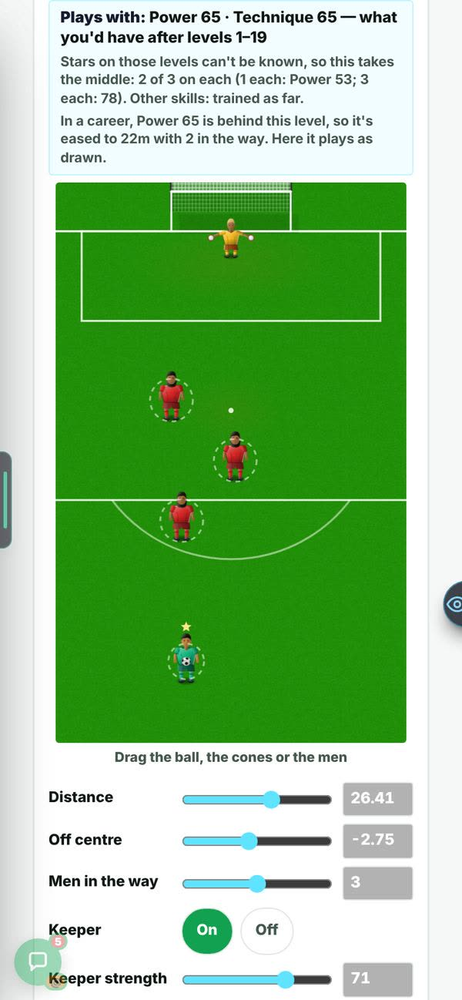
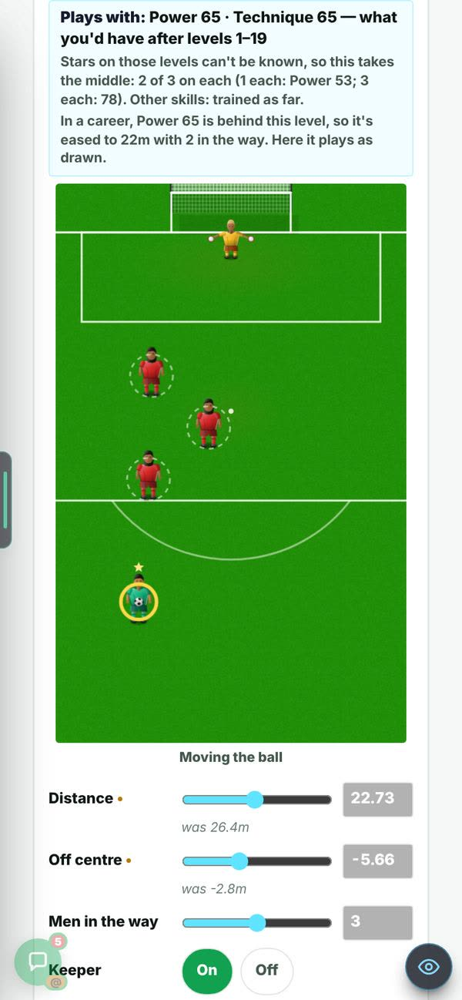
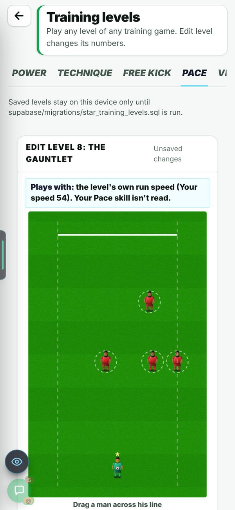
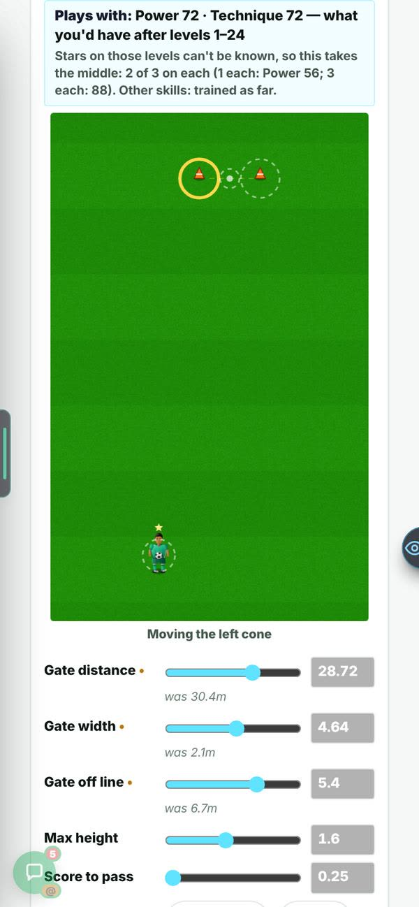
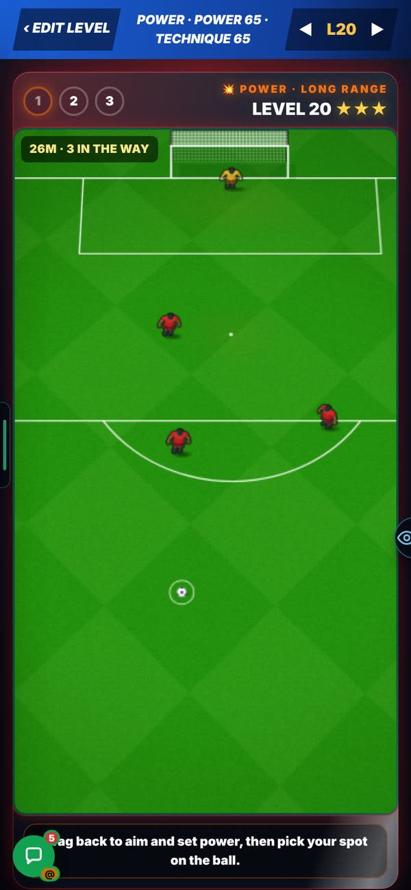
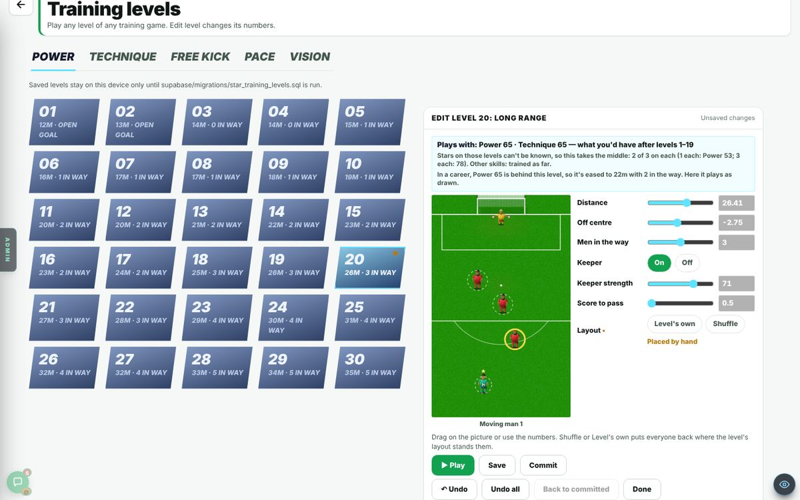
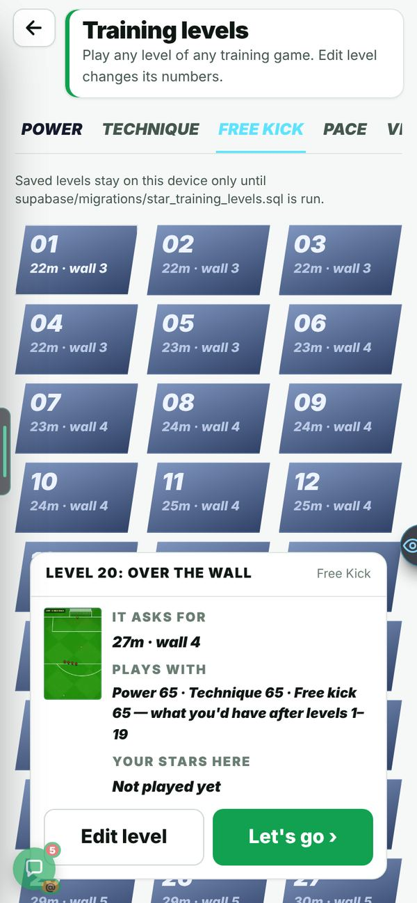
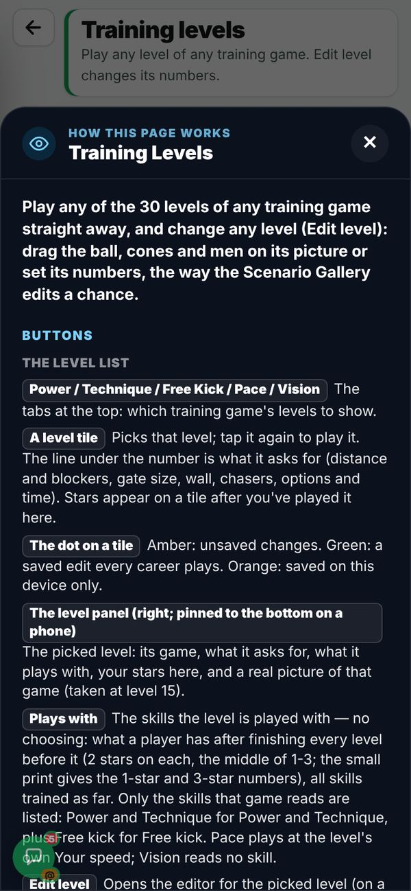
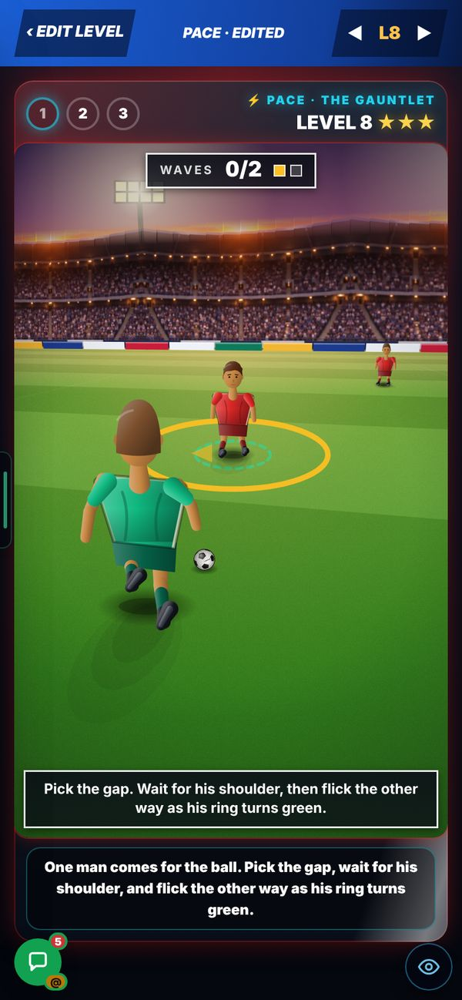
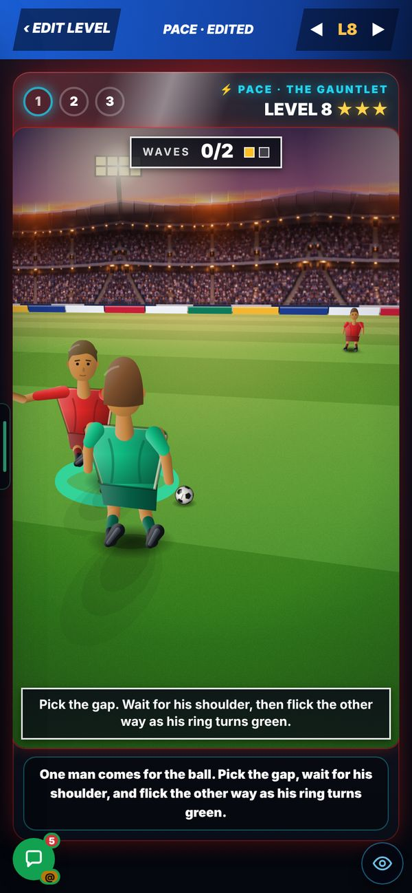

On the Harry branch, not live yet.
Overnight round, 20 Oct 2026. In Admin → Patch notes this is v0.77.
Harry, 20 Oct: the editor used sliders and number boxes. He wanted it like the gallery: move the ball, the cones and the men, then Save.
Not in the report.
The level’s picture from above sits beside the sliders. Drag on it.






Harry, 20 Oct: “surely it should just be auto: playing a level 20 skill would mean you have the 19 levels completed before it.”
Harry’s reasoning: the game already knows which levels you have finished, so it can work the skills out itself.
No slider. A level plays with the skills you would have after the levels before it, by the career’s own rule. It takes 2 of 3 stars on each earlier level. One line says so, and shows the range.
The rule is the career’s own: 40 + stars × 60 ÷ 90, with 2 of 3 stars taken on each earlier level.


Harry, 20 Oct: Pace needs a real skill element. Before, waiting for the right moment made no difference.
The report’s own measurement: waiting for the right moment changed nothing.
One man per wave comes for the ball and wears a ring. The ring is amber, then green for a short window. Flick the other way when it is green. Too early, and he goes with you. The window is 0.30 s against a weak man, 0.05 s against the best. This is the Training drill only. The real match and the trial are unchanged (tested).
Bots on the real run. A good bot waits for the ring. A hasty bot does not. Before, the wait made no difference. Now it does.


Look for: the ring (amber, then green), the flick the other way, then “Knocked it past him!”. The clip is 7 seconds long, on a phone-size screen.
After you pick a level, the page freezes on the second tab switch, then crashes. It happens in the test browser. The old page does the same.
Not in the report.
Found, not fixed. Not checked on a phone.
Vision pictures have no drag in the editor.
Vision pictures are not in the editor’s layout list yet. The report says one entry needs adding.
One entry to add in the layout file. Not done.
Pace, share of runs cleared before and after the knock-on (bots on the real run). Levels 1 to 10 / 11 to 20 / 21 to 30.
Plays with, level 20. Power and Technique 53 with 1 star on each earlier level, 65 with 2, 78 with 3. The rule: 40 + stars × 60 ÷ 90.
Ring window. 0.30 s against a weak man, 0.05 s against the best.
Power eased in a career. Level 20 draws 26 m. A career player with 2 stars on each earlier level has Power 65, which is behind that level, so it plays at 22 m with 2 men in the way.
Pace level 8: the knock-on ring and the flick. 7 seconds, on a phone-size screen. It is under “Pace: one man comes for the ball” above.